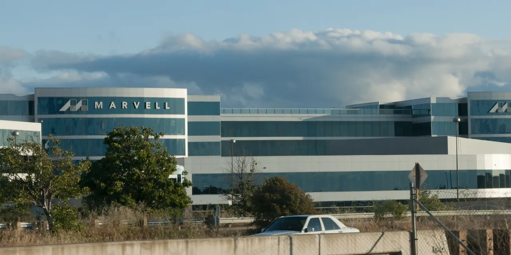

마벨 테크놀로지 그룹을 보는 투자자들이 가장 궁금해할 질문은 단순합니다. 이 회사가 정말 인공지능 데이터센터 맞춤형 반도체의 핵심 수혜주가 될 수 있느냐는 것입니다. 엔비디아처럼 완성된 그래픽처리장치를 파는 회사도 아니고, 브로드컴처럼 이미 대형 맞춤형 반도체 기대가 크게 붙은 회사도 아닙니다. 마벨은 그 사이에서 고속 연결, 광모듈, 맞춤형 실리콘, 저장장치 컨트롤러를 묶어 데이터센터 안쪽으로 들어가는 회사입니다.
마벨의 FY2027 1분기 실적 발표를 보면 매출은 24억 1,800만 달러였습니다. 전년 대비 63% 증가했고, 전 분기 대비로도 28% 늘었습니다. 이 가운데 데이터센터 매출은 18억 3,270만 달러로 전년 대비 76% 증가했습니다. 통신·기업 네트워킹·소비자·자동차와 산업을 합친 나머지 매출은 5억 8,510만 달러였습니다. 이 숫자는 마벨이 이미 데이터센터 회사에 가까워졌다는 뜻입니다.
문제는 좋은 숫자일수록 더 좁게 읽어야 한다는 점입니다. 데이터센터 매출 비중이 커졌다는 것은 성장성이 강하다는 뜻이지만, 동시에 고객 집중과 제품 전환 리스크가 커졌다는 뜻이기도 합니다. 마벨 주주에게 필요한 것은 인공지능 수요가 크다는 확인이 아니라, 그 수요가 맞춤형 반도체와 광연결 매출로 얼마나 안정적으로 반복되는지 확인하는 일입니다.
데이터센터 매출은 크기보다 집중도가 더 중요합니다

마벨의 데이터센터 매출은 이제 회사 전체를 설명하는 첫 번째 숫자입니다. FY2027 1분기 전체 매출 24억 1,800만 달러 중 18억 3,270만 달러가 데이터센터에서 나왔습니다. 약 4분의 3이 데이터센터라는 뜻입니다. 이렇게 한 부문이 빠르게 커지면 주가는 성장주처럼 움직이지만, 실적은 몇몇 대형 고객의 주문 시점과 재고 조정에 더 예민해집니다.
데이터센터 매출이 큰 회사와 데이터센터 매출이 안정적인 회사는 다릅니다. 마벨은 인공지능 서버 안에서 가속기끼리 데이터를 주고받게 하는 고속 연결, 광전송, 맞춤형 반도체 쪽에 강점을 둡니다. 이 시장은 수요가 커 보이지만, 고객은 매우 까다롭습니다. 칩 성능뿐 아니라 전력, 발열, 패키징, 소프트웨어 지원, 장기 공급 신뢰를 함께 봅니다. 설계가 한 번 들어가도 양산 수율과 납품 일정이 흔들리면 고객은 다음 세대에서 다른 선택을 할 수 있습니다.
그래서 마벨의 데이터센터 성장은 매출 증가율만으로 판단하면 위험합니다. 다음 분기 가이던스는 매출 27억 달러 안팎으로 제시됐습니다. 숫자 자체는 강하지만, 투자자는 그 안에서 데이터센터 비중이 더 커지는지, 데이터센터 외 부문이 계속 약한지, Non-GAAP 매출총이익률이 58% 안팎에서 유지되는지를 함께 봐야 합니다. 한쪽 매출이 너무 빨리 커질 때는 이익률과 고객 분산이 성장률만큼 중요합니다.
맞춤형 XPU는 설계 승리가 아니라 양산 전환으로 검증됩니다
관련 영상
NVIDIA and Marvell: Powering Accelerated Computing
마벨이 기대를 받는 이유 중 하나는 맞춤형 XPU입니다. 여기서 XPU는 고객이 원하는 특정 연산과 연결 구조에 맞춰 설계되는 맞춤형 가속 반도체로 이해하면 됩니다. 대형 클라우드 기업은 범용 그래픽처리장치만으로 모든 문제를 풀지 않습니다. 특정 워크로드에서는 자체 설계나 맞춤형 칩이 전력과 비용을 줄일 수 있습니다. 마벨은 이 흐름에서 고객 맞춤형 실리콘을 설계하고 연결 반도체까지 함께 제공하려 합니다.
다만 맞춤형 반도체는 발표가 빠르고 매출 전환은 느릴 수 있습니다. 고객이 설계를 맡긴다는 말과 실제 대량 양산이 시작된다는 말은 다릅니다. 중간에는 사양 확정, 검증, 테이프아웃, 수율 안정화, 패키징, 보드 설계, 소프트웨어 통합, 데이터센터 랙 단위 검증이 있습니다. 이 과정에서 일정이 밀리면 매출 인식도 늦어집니다. 반대로 한 고객의 맞춤형 칩이 성공하면 다음 세대까지 이어질 가능성이 커집니다.
투자자는 마벨의 맞춤형 XPU를 볼 때 고객 이름보다 매출 전환 속도를 먼저 봐야 합니다. 좋은 신호는 데이터센터 매출의 연속 성장, 설계 승리의 반복, 매출총이익률 유지, 현금흐름 개선입니다. 나쁜 신호는 특정 고객 주문이 한 번에 몰렸다가 다음 분기에 쉬는 모습, 재고 조정, 양산 일정 지연, 비용 증가입니다. 맞춤형 반도체는 성공하면 끈끈하지만, 초반에는 고객 집중 리스크가 크다는 점을 잊으면 안 됩니다.
광연결과 스위치는 인공지능 공장의 숨은 병목입니다
인공지능 데이터센터를 생각하면 대부분 가속기와 서버를 먼저 떠올립니다. 하지만 실제 병목은 데이터를 얼마나 빠르고 효율적으로 움직이느냐에서 생깁니다. 수천 개의 가속기가 함께 일하려면 칩 안팎, 서버 안팎, 랙과 랙 사이에서 데이터가 지연 없이 이동해야 합니다. 마벨의 고속 연결, 광전송, 스위치, 데이터센터 인터커넥트 제품이 주목받는 이유가 여기에 있습니다.
마벨은 Celestial AI와 XConn 인수를 통해 광연결과 고속 연결 포트폴리오를 강화했습니다. 이 방향은 이해하기 쉽습니다. 인공지능 모델이 커질수록 연산량만 늘어나는 것이 아니라 데이터 이동 비용도 커집니다. 전력과 발열이 한계에 가까워지면, 데이터 이동을 줄이고 더 효율적인 광연결을 쓰는 것이 전체 시스템 비용을 낮출 수 있습니다. 마벨이 단순 칩 회사가 아니라 데이터센터 연결 구조 안으로 들어가려는 이유입니다.
다만 광연결과 스위치 수요 역시 무조건 좋은 것은 아닙니다. 고객의 데이터센터 설계 방식이 바뀌면 필요한 부품 조합도 달라집니다. 엔비디아, 브로드컴, 자체 네트워킹 팀, 광모듈 공급사와의 관계도 계속 움직입니다. 마벨이 유리하려면 빠른 제품 출시보다 고객의 다음 세대 시스템 안에서 표준처럼 쓰이는지가 중요합니다. 광연결은 기술적으로 멋진 영역이지만, 주주 입장에서는 제품이 어느 고객의 어느 세대 데이터센터에 들어가는지가 더 중요합니다.
엔비디아 협력은 호재이지만 독립성을 같이 봐야 합니다
마벨과 엔비디아의 협력 발표는 시장이 마벨을 다시 보게 만든 큰 장면입니다. 엔비디아는 NVLink Fusion과 맞춤형 인공지능 인프라 생태계를 강조했고, 마벨은 맞춤형 실리콘과 연결 솔루션 쪽에서 이름을 올렸습니다. 이는 마벨이 단순 주변 부품 공급사가 아니라 인공지능 시스템 설계의 일부로 들어갈 수 있다는 신호입니다.
하지만 협력은 출발점이지 결론이 아닙니다. 엔비디아와 가까워지는 것은 분명한 호재지만, 마벨의 투자 논리가 엔비디아 하나에 과도하게 기대면 위험합니다. 엔비디아 생태계가 커질수록 수혜를 받을 수 있지만, 동시에 조건과 일정, 기술 방향이 엔비디아의 플랫폼 전략에 크게 좌우될 수 있습니다. 좋은 협력은 마벨의 독립적인 고객 기반과 제품 경쟁력을 넓히는 협력이어야 합니다.
마벨의 투자 포인트는 결국 세 가지로 줄어듭니다. 첫째, 데이터센터 매출이 계속 커지면서도 고객 집중 리스크가 관리되는지입니다. 둘째, 맞춤형 XPU와 광연결 제품이 설계 승리에서 양산 매출로 넘어가는지입니다. 셋째, 매출총이익률과 영업현금흐름이 함께 따라오는지입니다. FY2027 1분기 영업활동 현금흐름은 6억 3,880만 달러였습니다. 이 현금흐름이 데이터센터 성장과 함께 안정적으로 늘어난다면 마벨은 단순한 테마주가 아니라 인공지능 인프라의 핵심 연결 기업으로 평가받을 수 있습니다.
반대로 다음 몇 분기 동안 데이터센터 매출 성장률은 높지만 이익률이 흔들리고, 고객 주문이 특정 시점에 몰리고, 인수한 기술이 실제 제품 매출로 이어지지 않는다면 기대는 빠르게 낮아질 수 있습니다. 마벨은 좋은 위치에 있지만 쉬운 회사는 아닙니다. 이 종목은 인공지능 수요의 크기보다 그 수요가 어떤 고객, 어떤 제품, 어떤 세대의 데이터센터에서 반복되는지를 추적해야 합니다.